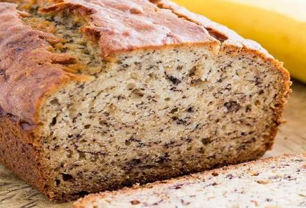

Banana Muffins
- 2 to 3 very ripe bananas, peeled (about 1 1/4 to 1 1/2 cups mashed)
- 1/3 cup melted butter, unsalted or salted
- 1 teaspoon baking soda
- Pinch of salt
- 3/4 cup sugar (1/2 cup if you would like it less sweet, 1 cup if more sweet)
- 1 large egg, beaten
- 1 teaspoon vanilla extract
- 1 1/2 cups of all-purpose flour
- 1 cup chocolate chips (optional)
- Preheat the oven to 350°F, and grease a 12 count muffin tin.
- In a mixing bowl, mash the ripe bananas with a fork until completely smooth. Stir the melted butter into the mashed bananas.
- Mix in the baking soda and salt. Stir in the sugar, beaten egg, and vanilla extract. Mix in the flour.
- Pour the batter into your prepared muffin tin. Bake for 15-20 minutes at 350°F (175°C), or until a tester inserted into the center comes out clean.
- Remove from oven and let cool in the pan for a few minutes. Then remove the banana muffins from the pan and let cool completely before serving.
Recipe from: Simply Recipes
Tips: Melt the butter in the bowl first, then mash the bananas into the melted butter to dirty less dishes! These muffins also freeze well. Place in a freezer bag after cooling. Heat muffin for 15-30 seconds when ready to eat.